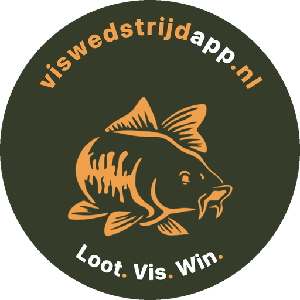
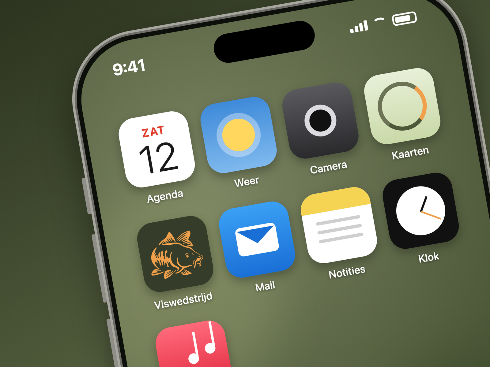

Zet de app op je beginscherm
Klaar in één minuut. Zonder App Store, zonder account.

Eén keer op je beginscherm zetten en je hebt alles bij de hand: de loting, de kaart met stekken en zones, vangsten doorgeven (ook als het bereik even wegvalt), het live klassement en de seizoensstand. Je vangst of de uitslag deel je met één tik op social media.
iPhone: in drie stappen
Open deze site in Safari en tik onderaan op het vierkantje met de pijl omhoog.
Scrol in het menu omlaag, kies "Zet op beginscherm" en tik op Toevoegen.
Open de app voortaan via het visje op je beginscherm en tik op de oranje knop Zet meldingen over nieuwe vangsten aan. Meldingen werken op iPhone alleen via de beginscherm-app, niet vanuit Safari zelf.
Android
Open de site in Chrome, tik rechtsboven op de drie puntjes en kies App installeren (of Toevoegen aan startscherm). Meldingen werken op Android ook gewoon in de browser.
Meedoen met een wedstrijd
Kies op de startpagina Deelnemer en vul de wedstrijdcode van de organisatie in, plus je naam. Je krijgt dan een persoonlijke code: bewaar die goed, daarmee log je altijd en overal weer in onder je eigen naam. Nieuwe telefoon? Op de wedstrijdpagina staat onderaan Al aangemeld? Log hier weer in; vul daar je persoonlijke code in en je bent terug bij je eigen deelname. Meld je niet nog een keer aan.
Per ongeluk op de terugknop (‹) getikt, of de app opnieuw geopend? Je bent dan niet uitgelogd: de app zet je vanzelf terug in je wedstrijd, en op het startscherm staat een knop Verder met de wedstrijd. Onder Mijn deelname kun je je persoonlijke code kopiëren, naar jezelf sturen, of met één tik bewaren in de wachtwoorden van je telefoon; daarna vult je telefoon hem zelf in als je ooit opnieuw moet inloggen.
Bij het aanmelden staat een vinkje "mijn vangstfoto's mogen op de socials van de viswedstrijdapp". Wil je dat niet, vink het dan uit; je foto's blijven dan alleen in de wedstrijd zichtbaar.
Tot de start van de wedstrijd kun je onder Mijn deelname je naam nog aanpassen.
Een vangst doorgeven
Tijdens de wedstrijd staat op elk scherm één oranje knop Vangst doorgeven. Die brengt je naar het formulier onder Mijn deelname: gewicht, foto, versturen. Zie je bij een vangst een ★, dan heeft de organisator die vangst aangepast of handmatig ingevoerd; houd je vinger erop en je ziet wat er veranderd is.
Meekijken zonder mee te doen
Met de kijkcode (kies op de startpagina Kijker) volg je een wedstrijd live: het klassement, de vangsten met foto, en op de kaart wie waar zit. Je kunt niets veranderen of doorgeven. Zet meldingen aan en je krijgt een seintje bij elke vangst en bij het einde. Onder het klassement staat een knop om de kijklink door te sturen; deelnemers vinden diezelfde knop onder Mijn deelname (deel nooit je persoonlijke code, alleen de kijklink).
Het einde van de wedstrijd
In het laatste uur kleurt de klok rood. Op de eindtijd sluit de server het registreren, krijgt iedereen met meldingen aan een bericht met de winnaar, en toont de app een scherm met de nummers 1, 2 en 3 en het tijdstip van de prijsuitreiking (als de organisator dat heeft ingevuld). Vanaf dat scherm deel je de einduitslag met één tik in de groepsapp of op social media.
Vissen jullie met z'n tweeën aan één stek?
Dan meldt één van de twee zich aan en zet het vinkje Wij vissen met z'n tweeën aan één stek aan, met de naam van de maat erbij. Jullie loten dan samen en zitten samen op één stek of zone, maar in het klassement staat ieder met zijn eigen score. De persoonlijke code van je maat krijg je meteen te zien, met een knop om hem door te sturen.
Liever op papier? Download de print-versie (PDF, A4).
Vragen over de app? Mail info@viswedstrijdapp.nl.